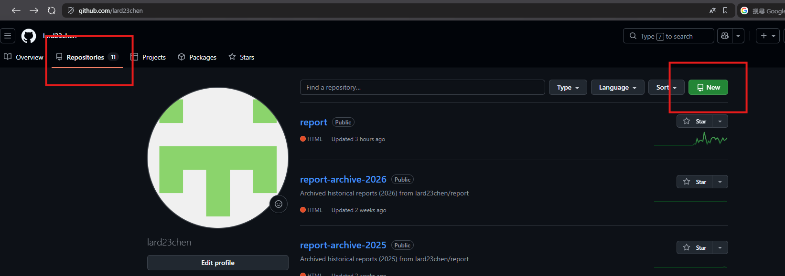
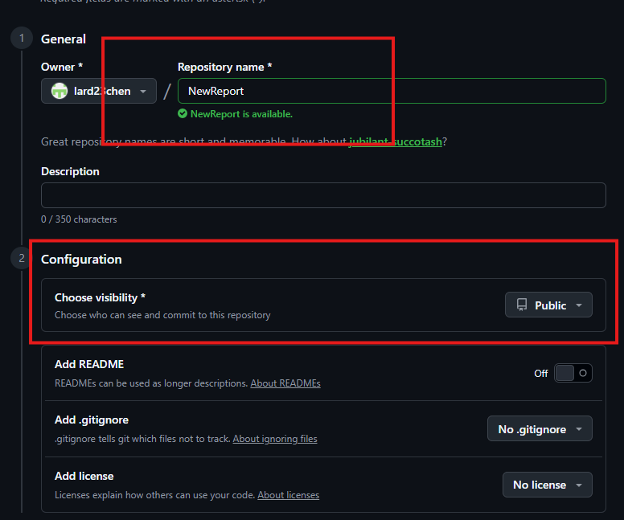
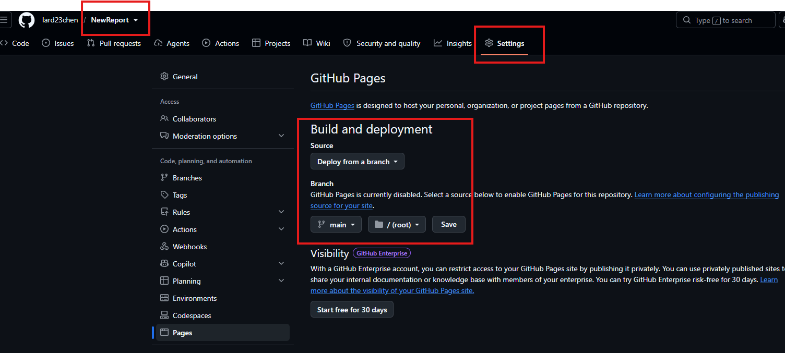
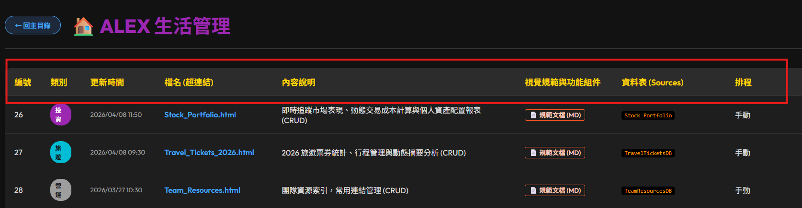

從 Excel／雲端試算表出發，走完分析、部署、回寫、資料庫化、排程與通知的完整流程
本課程將涵蓋以下八大核心主題：
從 Excel 或雲端 Excel 讀取資料並分析產出 HTML 檔案。
將產出的本地端 HTML 檔案推送 (Push) 到網站上顯示。
將讀取的資料進行編輯並回寫到 Excel 檔案或雲端 Excel。
建立個人程式列表（如知識庫或生活管理系統）。
將 Excel 資料轉入 MongoDB。
使用排程工具將每日資料進行自動更新。
當資料更新完成後，自動進行 LINE 通知。
整體系統效能優化與資訊安全防護。
D:\AI\report



利用所學技術建立個人化工具：
